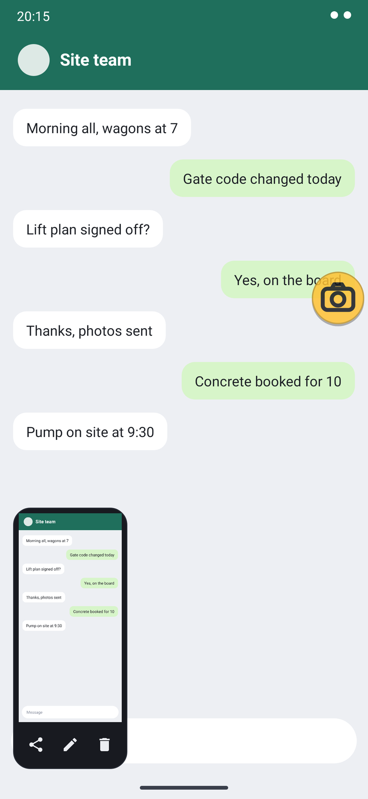
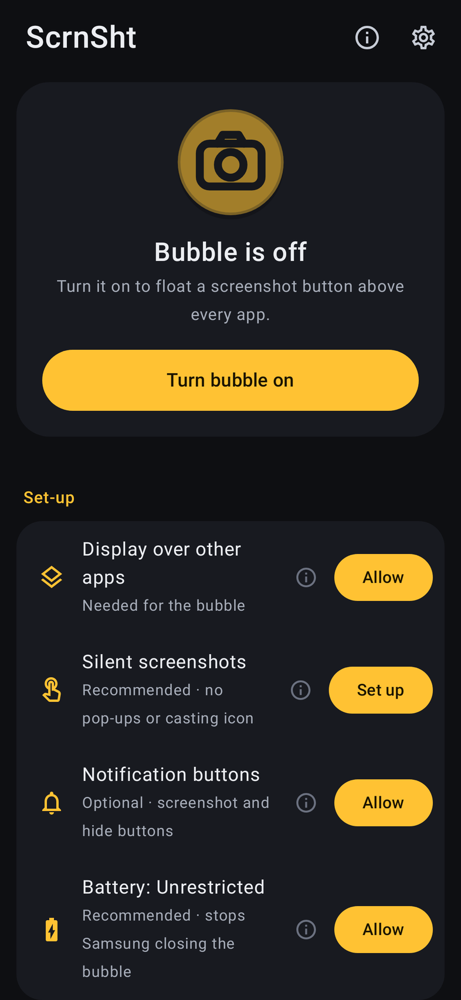
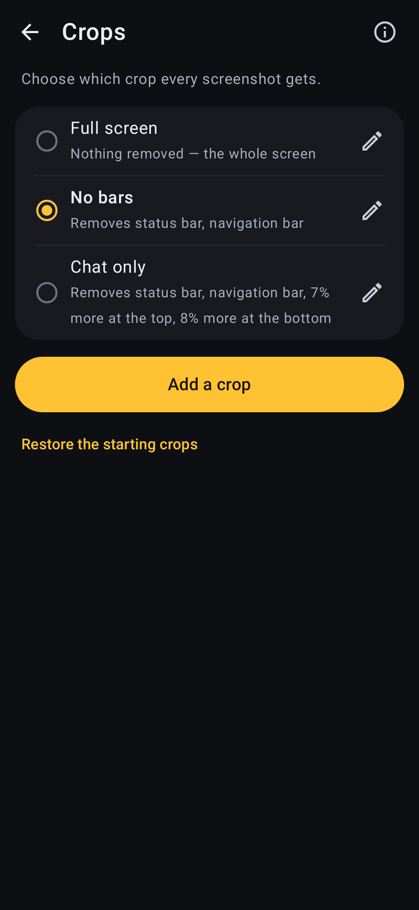
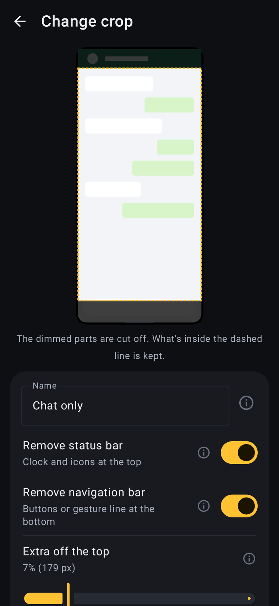
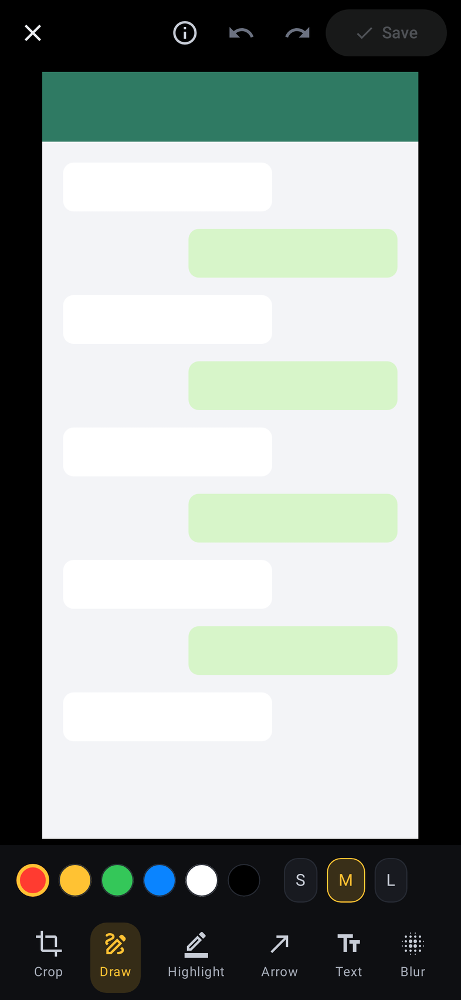
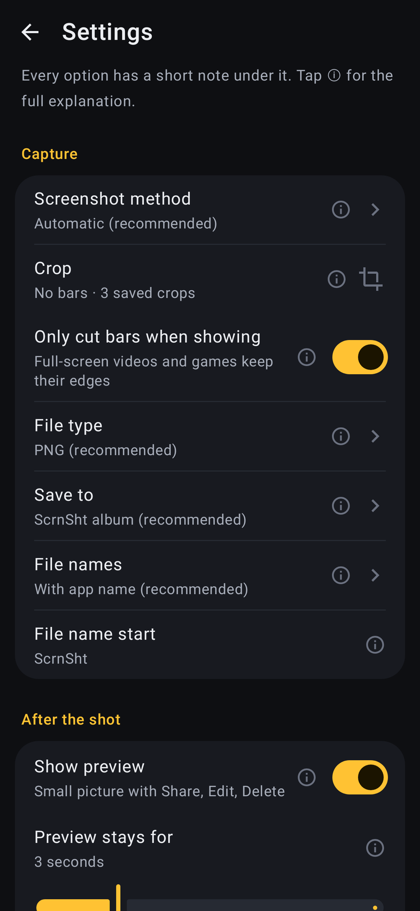
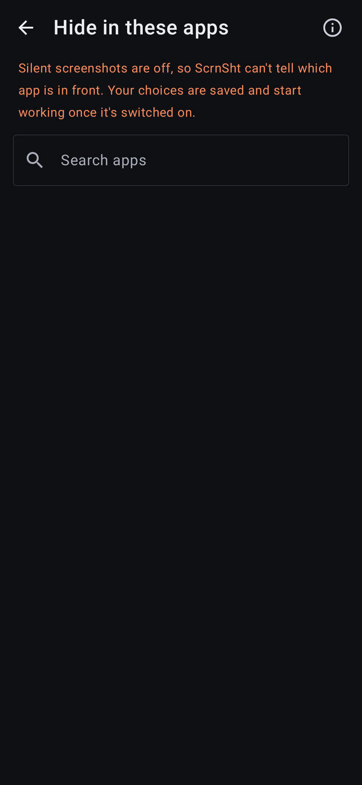

One tap. A clean screenshot.
ScrnSht floats a small see-through button over every app. Tap it and the screen is captured, the clock bar and the button bar are cropped off, and the picture lands in your gallery.
No buttons to squeeze, no editing afterwards. A thumbnail pops up in the corner for a few seconds so you can share it, edit it or bin it straight away.
Download for AndroidHow to install
- Version 1.2
- Android 13 or later
- 2.6 MB
Free, with nothing to unlock. No adverts, no account with the developer, no tracking. Compare or read the release notes.
Chrome may say the file might be harmful. It shows this for app files that do not come from Google Play. Choose Download anyway.

- No subscriptionEvery feature is in the free app.
- No advertsNone in the app and none on this site.
- Nothing sentScreenshots stay on your phone.
- Never in the pictureThe button hides itself for the shot.
A look inside
These are the real screens, drawn from the app's own code. The chat is made up. Swipe or scroll sideways to see them all.






How it works
There is nothing to buy and no account to make. Set it up once and the button is there whenever you need it.
Turn the bubble on
From the app, the quick-settings tile or the home-screen switch.
Tap it over any app
It hides itself, takes the shot and crops off the bars.
Find it in your gallery
In its own ScrnSht album, named with the date, time and app.
Everything is in, and all of it is free
Nothing below is held back for a paid tier, because there is no paid tier.
Taking the shot
- A floating bubble
- See-through, in any colour, size and shape. Drag it anywhere; it snaps to the edge and tucks half away when you leave it.
- Silent
- With the accessibility switch on there is no pop-up and no casting icon. Without it, ScrnSht falls back to Android's screen-cast method.
- A timer
- Counts down on the bubble itself, so you can open a menu or get a page ready.
- Shake to shoot
- Two quick shakes take a screenshot. Off unless you switch it on.
Cropping
- Bars off, automatically
- The status bar and the navigation bar are cut off as the shot is taken, but only when they are showing, so videos and games keep their edges.
- Saved crops
- Full screen, no bars, chat only, or your own, with extra cut off the top and bottom. Switch from the bubble's menu.
- PNG or JPG
- PNG keeps every pixel sharp. Files are named like ScrnSht_2026-11-21_20-15-32_WhatsApp.png.
After the shot
- Thumbnail with buttons
- Share, Edit or Delete straight away, or swipe it off the screen.
- A quick editor
- Crop, draw, highlight, arrows, text, and blur that turns names and numbers into squares. Saves a copy and keeps the original.
- Keeps out of the way
- Hides itself in apps you choose, in full-screen apps and while you are typing.
Shortcuts
- Quick-settings tile
- Turn the bubble on and off from the pull-down panel.
- Two widgets
- A one-tap screenshot button and a bubble on/off switch for the home screen.
- Notification buttons
- Take screenshot and Hide bubble, while the bubble is on.
Your screenshots stay yours
Nothing uploaded
Screenshots are saved on your phone, in your normal photo library, and are never sent anywhere.
No servers, no account
The developer receives nothing. The only time ScrnSht goes online is to ask GitHub whether a newer version is out, and that can be switched off.
No ads, no tracking
There is no advertising, analytics or tracking, in the app or on this site.
Installing and updating
ScrnSht is not on Google Play, so your phone asks a couple of extra questions the first time.
Download the app file
Tap Download on your phone. The file is called ScrnSht.apk and is about 2.6 MB. If Chrome says the file might be harmful, choose Download anyway.
Allow the install
Open the file. The first time, Android asks you to allow your browser to install apps. Allow it, go back and tap Install. If Google Play Protect steps in, choose More details, then Install anyway.
Updating later
ScrnSht tells you when a newer version is out. Install the new file over the old one and everything you have saved is kept.
Version 1.2, released 21 November 2026. See the release notes, or check your download.
Questions
Is ScrnSht really free?
Yes. There is no paid version, no subscription and no adverts. See the comparison.
Will the bubble be in my screenshots?
No. The bubble, the thumbnail and the flash all hide for the moment the shot is taken.
Why does it ask for the accessibility switch?
It is how Android lets an app take a screenshot silently, with no pop-up. ScrnSht doesn't read, keep or send anything on your screen; it only notes which app is in front, so the file name can include it. Without the switch, ScrnSht uses Android's screen-cast method instead, which asks each time the bubble is turned on.
The accessibility switch is greyed out
Android does this for apps installed from outside Google Play. Open ScrnSht, tap Set up on the Silent screenshots card, and follow the steps: they show where to tap "Allow restricted settings".
Can it take long, scrolling screenshots?
No. Samsung phones already do this well with the buttons; ScrnSht is for quick, clean shots of what is on the screen.
Some apps come out black
Banking apps, some video apps and password screens tell Android not to allow screenshots. No screenshot app can capture them.
Where are my screenshots?
In the ScrnSht album in your gallery, or with Samsung's screenshots if you choose that in Settings.
How do I update ScrnSht?
ScrnSht checks GitHub once a day and shows a note on its main screen when a newer version is out. Install it over the one you have; your settings are kept.
The screenshot button your phone should have had
Free, with no adverts and nothing to unlock. Made by the developer of several other free Android apps: see them all.